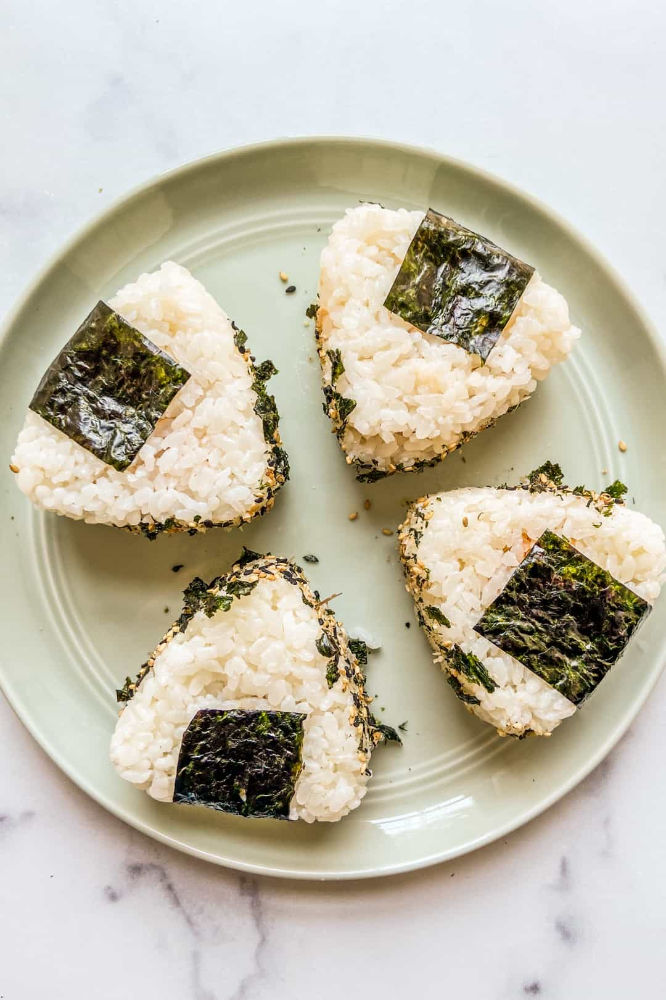

Spicy Salmon Onigiri Recipe

Description
I love onigiri, they are so simple to make, and you can fill them up with basically anything
Recently i also found that toasting the outside of the onigiri on a non-stick pan with some soy sauce really enhances the flavor
Ingredients
- 1/2 cup sushi rice
- 3/4 cup water
- 1 tbsp sweet and savory rice vinegar
- 1 can salmon
- 2 tbsp spicy mayo
- paprika
- 1 tbsp soy sauce
- nori sheets
- furikake seasoning
Steps
- Rinse your rice and add to pot with water
- Bring to a boil, cover and let simmer for 20 minutes
- Remove from heat and let sit for 10 minutes
- Stir in rice vinegar
- Mix together salmon, mayo, soy sauce, paprika, and salt and pepper in a bowl
- Sandwich a spoonful of salmon between two rice chunks, and form into a triangle shape with your hands
- Once all onigiri have been formed, drizzle a small amount of soy sauce on each side, and place on nonstick pan with some oil until each side is golden brown
- Wrap in nori, sprinkle furikake seasoning on and serve